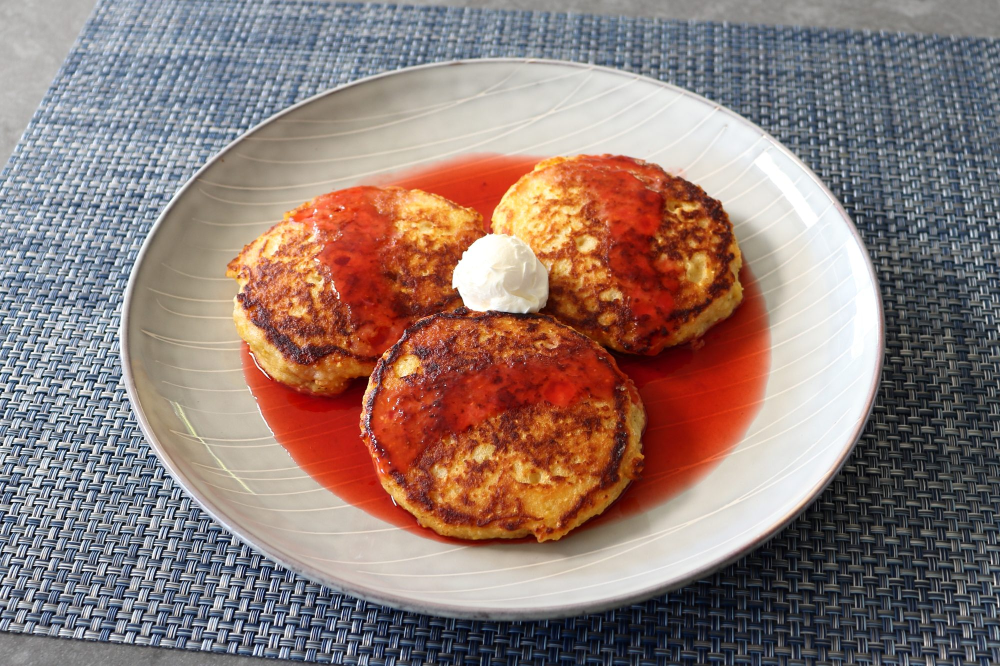

Cornbread Pancakes with strawberry Syrup

Description
Fluffy Cornbreak Pancakes served with Strawberry Syrup and
sour cream
Ingredients
Strawberry syrup
1 pound fresh strawberries
1/2 cup white sugar
1/2 cup cold water
2 teaspoons fresh lemon juice
Cornbread Pancakes
3/4 cup all-purpose flour
2 tablespoons white sugar
1 teaspoon baking powder
1 teaspoon kosher salt
1 3/4 cups buttermilk
1 1/4 cups cornmeal
3 tablespoons unsalted butter
2 large eggs
Steps
- Place strawberries in a saucepan over medium-high heat. Stir in sugar, water, and lemon juice and bring to a simmer. Lower heat to medium and cook, stirring occasionally, until strawberries are very soft, and the syrup starts to thicken, 15 to 20 minutes.
- Remove from the stove and carefully pass through a mesh sieve into a bowl. Discard any seeds and fibrous bits that are left in the sieve. Let syrup cool for 15 minutes, then cover and store in the refrigerator until needed.
- Whisk together flour, sugar, baking powder, baking soda, and salt in a bowl until all ingredients are well incorporated; set aside.
- Place buttermilk, cornmeal, and 2 tablespoons butter in a saucepan over medium heat. Stir with a whisk until butter melts and mixture starts to simmer. Once simmering, cook and stir until very thick, about 2 minutes. Remove from the heat and cool for 10 minutes.
- Whisk eggs into the cooled cornmeal mixture until incorporated. Add the reserved flour mixture and stir with a spatula until well combined and no flour remains in the saucepan; batter will be thick but still scoopable.
- Melt 1 tablespoon butter in a skillet over medium heat. Working in batches, scoop 1/3 cup batter for each pancake into the hot skillet and press them down with the back of a spatula to flatten out. Cook until the outside edges start to look a little dry, about 3 to 4 minutes. Flip and repeat on the other side until pancakes are cooked through, another 3 to 4 minutes. Repeat to cook remaining pancakes, adding more butter to the skillet as necessary.
- Top warm pancakes with strawberry syrup